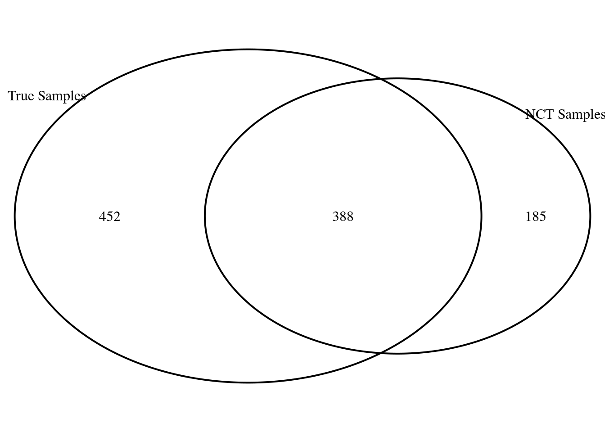
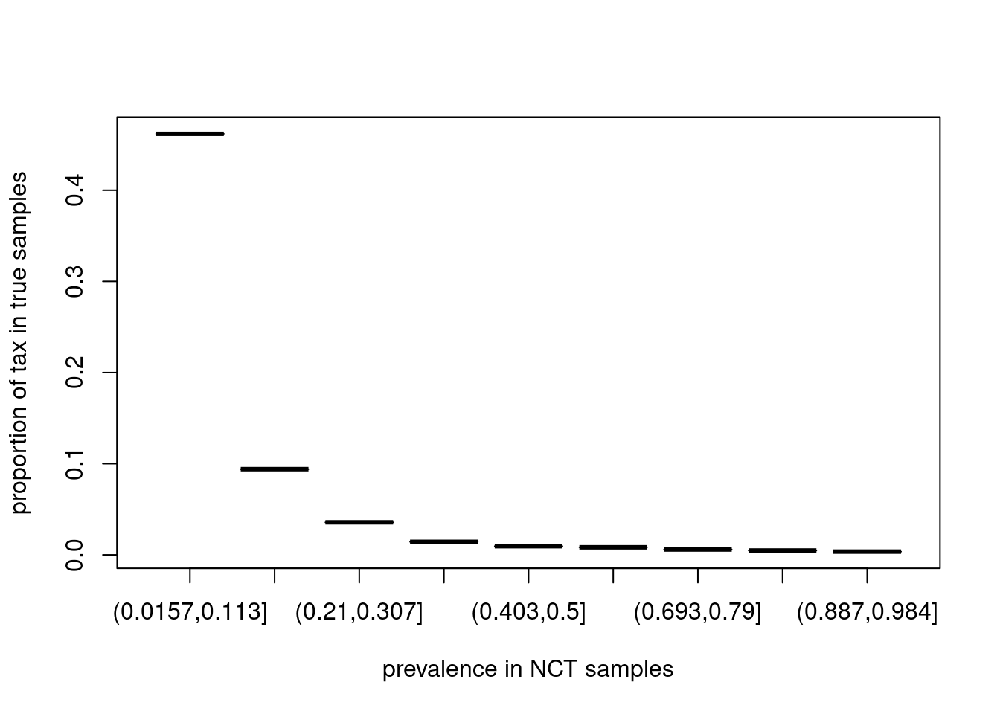
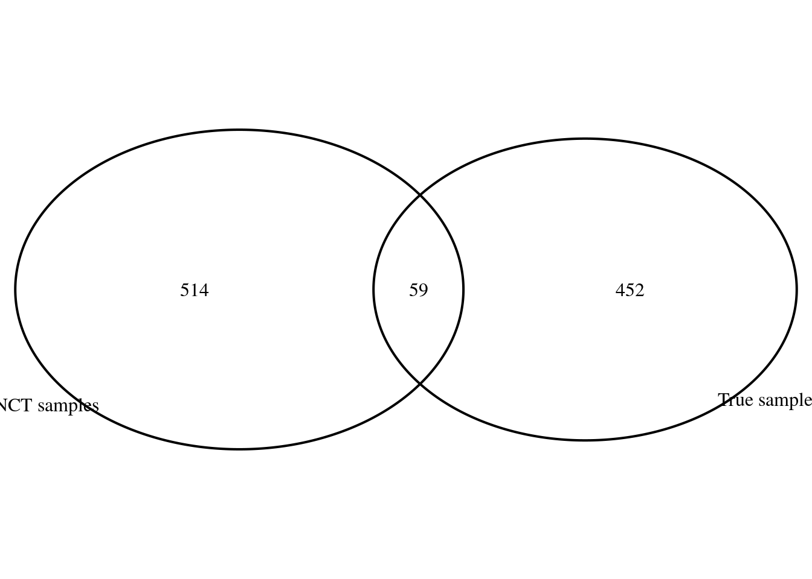
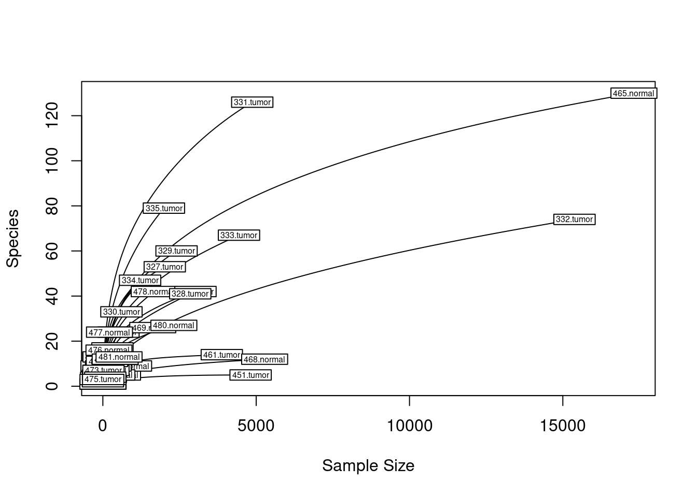
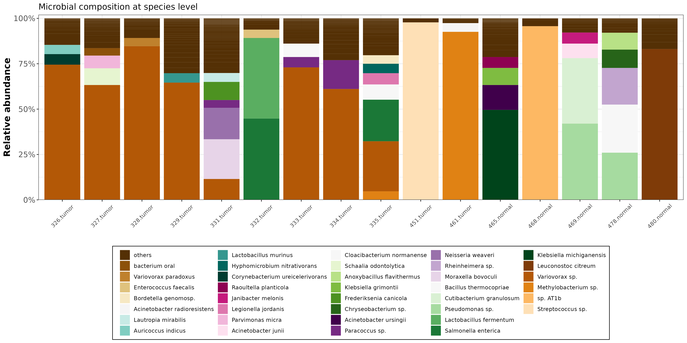

Pipeline_StreamLine
Summary
In this experiment, human tumor vs. normal pancreas FFPE tissue samples from the Pathology department are examined. The DNA had been isolated with the Invitrogen FFPE kit (by me). The sample size is n=24 for both tumor and normal pancreas (matched patients). Additionally, n=6 FFPE tumor tissue samples from the establishment experiment (patho_ffpe_self) without matched normal pancreas tissue are implemented (so we have n=30 tumor, n=24 normal pancreas). n=75 NTCs (n=23 paraffin tumor, n=24 paraffin normal, n=10 buffer-only, n=7 PCR CTRLs) plus n=11 NTCs from the establishment experiment (patho_ffpe_self) are implemented.
Code
## adding functions
source("./MyFunctions.R")
source("./MyAnalysisWithPlots.R")The Pipeline
Prepare materials for the pipeline
Loading true samples
Code
Path2PhyloSeqObj <- "../../raw_data/PhyloSeqObj_2/"
physeq1 <- readRDS(paste0(Path2PhyloSeqObj,"2022_05_27_patho_FFPE_tum_panc_1/physeq_original_1500.80.rds"))
physeq2 <- readRDS(paste0(Path2PhyloSeqObj,"2022_05_27_patho_FFPE_tum_panc_2/physeq_original_1500.80.rds"))
physeq3 <- readRDS(paste0(Path2PhyloSeqObj,"2022_05_28_patho_FFPE_tum_panc_3/physeq_original_1500.80.rds"))
physeq4 <- readRDS(paste0(Path2PhyloSeqObj,"2022_05_28_patho_FFPE_tum_panc_4/physeq_original_1500.80.rds"))
physeq5 <- readRDS(paste0(Path2PhyloSeqObj,"2021_12_01_patho_FFPE_self_tumor/physeq_original_1500.80.rds"))
#physeq5sub <- subset_samples(physeq5, sample_nr!="P19269-20" & sample_nr!="P15970-20" & sample_nr!="P12758-20" & sample_nr!="P3434-20")
p.true.original <- merge_phyloseq(physeq1,physeq2,physeq3,physeq4, physeq5)
## clean objects
rm(list = c("physeq1", "physeq2", "physeq3", "physeq4", "physeq5"))Now in true samples, we have:
Code
p.true.original %>% sample_data() %>% pull(sample_side) %>% table().
normal tumor
24 34 We have 58 true samples and 1679 taxa.
Loading NCTs
Code
physeq.nct1 <- readRDS(paste0(Path2PhyloSeqObj,"2022_06_02_patho_FFPE_tum_panc_ntc_1/physeq_original_1500.80.rds"))
physeq.nct2 <- readRDS(paste0(Path2PhyloSeqObj,"2022_06_02_patho_FFPE_tum_panc_ntc_2/physeq_original_1500.80.rds"))
physeq.nct3 <- readRDS(paste0(Path2PhyloSeqObj,"2022_06_03_patho_FFPE_tum_panc_ntc_3/physeq_original_1500.80.rds"))
physeq.nct4 <- readRDS(paste0(Path2PhyloSeqObj,"2022_06_03_patho_FFPE_tum_panc_ntc_4/physeq_original_1500.80.rds"))
physeq.nct5 <- readRDS(paste0(Path2PhyloSeqObj,"2022_06_04_patho_FFPE_tum_panc_ntc_5/physeq_original_1500.80.rds"))
physeq.nct6 <- readRDS(paste0(Path2PhyloSeqObj,"2022_06_04_patho_FFPE_tum_panc_ntc_6/physeq_original_1500.80.rds"))
physeq.nct7 <- readRDS(paste0(Path2PhyloSeqObj,"2022_06_10_patho_FFPE_tum_panc_ntc_7/physeq_original_1500.80.rds"))
physeq.nct8 <- readRDS(paste0(Path2PhyloSeqObj,"2022_07_13_patho_FFPE_tum_panc_ntc_8/physeq_original_1500.80.rds"))
physeq.nct9 <- readRDS(paste0(Path2PhyloSeqObj,"2022_07_13_patho_FFPE_tum_panc_ntc_9/physeq_original_1500.80.rds"))
physeq.nct10 <- readRDS(paste0(Path2PhyloSeqObj,"2021_12_02_patho_FFPE_self_ntc/physeq_original_1500.80.rds"))
physeq.nct11 <- readRDS(paste0(Path2PhyloSeqObj,"2022_01_24_patho_FFPE_self_ntc_2/physeq_original_1500.80.rds"))
physeq.nct.original <- merge_phyloseq(physeq.nct1, physeq.nct2, physeq.nct3, physeq.nct4, physeq.nct5, physeq.nct6, physeq.nct7, physeq.nct8, physeq.nct9, physeq.nct10, physeq.nct11)
## clean up
rm(list = c('physeq.nct1', 'physeq.nct2', 'physeq.nct3', 'physeq.nct4', 'physeq.nct5',
'physeq.nct6', 'physeq.nct7', 'physeq.nct8', 'physeq.nct9', 'physeq.nct10', 'physeq.nct11'))Now, in NCT samples, we have:
Code
physeq.nct.original %>% sample_data() %>% pull(sample_side) %>% table().
buffer paraffin paraffin_normal paraffin_tumor PCR_ctrl_H2O
12 9 24 23 7 Those NCTs comprises of 75 samples and 1101 taxas.
Curating Data
Before the actual analyses, we need to filter taxas, in order to remove less significant taxas and contaminants.
Overview
The protocol is as follows:
Filtering for bacterial reads
Deleting all taxIDs without resolution to species level, and combine different taxa_ids which belong to the same species (tax_glom)
Filtering low abundance taxa in true samples, by either one of the methods:
Abundance filtering by PERfect package. (⚑)
Nejman et al. any taxa whose abundance below 10^-4 and prevalence less than 20% is removed.
Filtering taxas based on their prevalence in NCTs. Utilizing either one of the following:
Decontam R package
Nejman et al. (2020) procedure (⚑), including:
For the taxas whose prevalence in NCTs are high, consider them as contaminants. The threshold is determined by the plot (30%).
For the taxas whose prevalence in NCTs are low, for each of those taxas, we apply Binomial test (one-sided, per condition, and per batch). All taxas whose p-values are greater than 0.05 are removed.
Batch effect correction (inter-batches) by ConQuR
Normalization by rarefaction (vegan + phyloseq packages)
Keep only bacterial reads (Step 1+2)
We keep only bacterial reads with resolution to species
Code
## for true samples
p.true.filt <- subset_taxa(p.true.original, superkingdom=="Bacteria")
p.true.filt.s <- tax_glom(p.true.filt, taxrank = "species", NArm = TRUE)
rm(p.true.filt)
## for NCTs
physeq.nct.filt <- subset_taxa(physeq.nct.original, superkingdom=="Bacteria")
physeq.nct.filt.s <- tax_glom(physeq.nct.filt, taxrank = "species", NArm = TRUE)
rm(physeq.nct.filt)Now in true sample, we have 58 samples and 880 taxa. In the NCTs, we have 75 samples and 586 taxa.
Low abundance filtering (Step 3)
In this step, we remove all taxas in true samples whose abundance are low (eg. <10^-4) and prevalence are low (eg. <20%). We simply apply PERfect package.
Code
p.true.RmLowAbun <- Wrapper_FERfect(p.true.filt.s)Now we have 58 samples and 840 taxa.
Filtering taxas by their prevalence in NCTs (Step 4)
Before using NCTs for decontamination, we firstly need to remove samples from NCTs whose read counts are low.
Overview of read counts in samples in NCTs
Code
bac.count.ntc <- tibble(bac.count = sample_sums(physeq.nct.filt.s),
sample = sample_data(physeq.nct.filt.s)$id) %>%
arrange (bac.count)
tibble(
">150 reads" = length(which(bac.count.ntc$bac.count > 150)),
">250 reads" = length(which(bac.count.ntc$bac.count > 250)),
">500 reads" = length(which(bac.count.ntc$bac.count > 500)),
">750 reads" = length(which(bac.count.ntc$bac.count > 750)),
">1000 reads" = length(which(bac.count.ntc$bac.count > 1000)),
) %>%
kable (caption="NTC read counts", booktabs =TRUE) %>%
kable_classic(full_width = F, html_font = "Cambria") %>%
kable_styling(bootstrap_options = c("striped", "hover", "condensed", "responsive")) | >150 reads | >250 reads | >500 reads | >750 reads | >1000 reads |
|---|---|---|---|---|
| 60 | 52 | 36 | 25 | 22 |
We decide to remove NCT samples if their read counts are less than 150
Code
id.ex <- bac.count.ntc %>% filter(bac.count < 150) %>% pull (sample)
physeq.nct.filt.s <- subset_samples(physeq.nct.filt.s, !(id %in% id.ex))
physeq.nct.filt.s <- prune_taxa(taxa_sums(physeq.nct.filt.s)>0, physeq.nct.filt.s)Now, in NTC samples, we have 60 samples and 573 taxa.
First of all, let us check the taxa overlap between NCT samples and true sample after low-abundance filtering by PERfect.
Code
PlotVenn2Sets(row.names(otu_table(p.true.RmLowAbun)) %>% unique(),
row.names(otu_table(physeq.nct.filt.s)) %>% unique(),
"True Samples" , "NCT Samples ")
There are 185 taxa belong to NCT samples but not in true samples (after PERfect). They are obvious contamination.
Instead of Decontam R package, we follow procedure of Nejman et al..
High prevalence taxas in NCTs
We consider all taxas whose prevalence in NCTs are higher than a certain threshold (eg. 30%) are contaminants.
In order to determine that threshold, we have a look at the plot below
Code
xout <- HighPrevalence_Data(p.true.RmLowAbun, physeq.nct.filt.s)
plot(xout$factorx, xout$rel_tax, xlab="prevalence in NCT samples", ylab="proportion of tax in true samples")
This plot shows us how many percents of taxa we would remove from true samples (y-axis) if we pick up a threshold for high prevalence in NCT samples (x-axis).
From this plot, a threshold 0.3 would be fine.
Code
filter <- 0.3
filtered_taxa1 <- tibble(
Cont = genefilter_sample(physeq.nct.filt.s, filterfun_sample(function(x) x > 0), A=filter*nsamples(physeq.nct.filt.s)),
OTU = names(genefilter_sample(physeq.nct.filt.s, filterfun_sample(function(x) x > 0), A=filter*nsamples(physeq.nct.filt.s)))
) %>%
arrange (-Cont)
cont.count <- filtered_taxa1 %>% count(Cont)
cont.count %>%
kable (caption=paste("Count of contaminants (filter", filter*100, " %)"), booktabs =TRUE) %>%
kable_classic(full_width = F, html_font = "Cambria") %>%
kable_styling(bootstrap_options = c("striped", "hover", "condensed", "responsive")) | Cont | n |
|---|---|
| FALSE | 557 |
| TRUE | 16 |
The list of contaminants determined by high prevalence in NCTs (threhold 0.3)
Code
df.fam.melt <- psmelt(physeq.nct.filt.s)
df.fam.melt %>% select(OTU, species) %>%
unique %>%
right_join(filtered_taxa1) %>%
filter(Cont == TRUE) %>%
select(-Cont) %>%
kable (caption=paste("Contaminants (filter", filter*100, " %)"), booktabs =TRUE) %>%
kable_classic(full_width = F, html_font = "Cambria") %>%
kable_styling(bootstrap_options = c("striped", "hover", "condensed", "responsive")) %>%
scroll_box(width = "70%", height = "600px")Joining, by = "OTU"| OTU | species |
|---|---|
| 13689 | Sphingomonas paucimobilis |
| 34062 | Moraxella osloensis |
| 1523415 | Sphingomonas sp. |
| 1280 | Staphylococcus aureus |
| 1276282 | Staphylococcus pasteuri |
| 739141 | Methylobacterium sp. |
| 1292 | Staphylococcus warneri |
| 653931 | Sphingomonas alpina |
| 553199 | Cutibacterium acnes |
| 1282 | Staphylococcus epidermidis |
| 1549858 | Sphingomonas taxi |
| 152682 | Sphingomonas melonis |
| 2579977 | Brevundimonas sp. |
| 1945662 | Paracoccus contaminans |
| 1560345 | Sphingomonas panacis |
| 93064 | Sphingomonas koreensis |
We now remove those taxa which have high prevalence in NTC samples out of true samples
Code
p.true.RmLowAbun.RmHighPrev <- prune_taxa(setdiff(rownames(otu_table(p.true.RmLowAbun)),filtered_taxa1[filtered_taxa1$Cont==TRUE,] %>% pull("OTU")), p.true.RmLowAbun)Now we have 58 true samples and 825 taxa. In NCTs, we have 60 control samples and 573 taxa.
The Venn diagram of taxa between true samples and NCTs is now
Code
PlotVenn2Sets(rownames(otu_table(p.true.RmLowAbun.RmHighPrev)), rownames(otu_table(physeq.nct.filt.s)), "True samples", "NCT sample")
Low prevalence taxas in NCTs
For those taxa whose prevalence are low in NCT samples, we apply Binomial test per-condition, per-batch to determine if they are contaminants or not.
We need metadata information to proceed
Code
# load metadata
library("readxl")
metadata <- read_excel("../../raw_data/Metadata_2.xlsx") %>% as.data.frame()
metadata <- metadata[,c("uniqueID", "sample_side", "sample_nr", "TRUE_control", "DNAex_round", "PCR_round")]
physeq.comb.filt <- merge_phyloseq(p.true.RmLowAbun.RmHighPrev, physeq.nct.filt.s)
sample_data(physeq.comb.filt)$is.neg <- sample_data(physeq.comb.filt)$TRUE_control == "control"The samples in each condition each batch must contain both true sample and NCTs in order to apply Binomial test. Thus, we firstly check how many of them are valid
Code
# filter metadata
keep_idx <- sample_data(physeq.comb.filt) %>% pull(uniqueID) %>% unique()
metadata <- metadata[metadata$uniqueID %in% keep_idx,]
metadata <- metadata %>% mutate(sample_type = ifelse(grepl("paraffin", tolower(sample_side), fixed = TRUE),"paraffin",
ifelse(grepl("buffer", tolower(sample_side), fixed = TRUE),"buffer",
ifelse(grepl("pcr", tolower(sample_side), fixed = TRUE),"pcr_ctrl", "true_sample"))))
rownames(metadata) <- paste(metadata$uniqueID, metadata$sample_side, sep = '.')
tmp <- metadata$DNAex_round %>% as.numeric()Warning in metadata$DNAex_round %>% as.numeric(): NAs introduced by coercionCode
DNAex_lst <- tmp[!is.na(tmp)] %>% unique()
tmp <- metadata$PCR_round %>% as.numeric()
PCR_lst <- tmp[!is.na(tmp)] %>% unique()
is.valid.DNAex <- lapply(DNAex_lst, is.valid.batch, batch_type="DNA", meta_data=metadata)
is.valid.PCR <- lapply(PCR_lst, is.valid.batch, batch_type="PCR", meta_data=metadata)
Tab <- data.frame(matrix(NA, nrow = 2, ncol = 9))
colnames(Tab) <- c(1:9)
rownames(Tab) <- c("DNAex_round", "PCR_round")
Tab["DNAex_round", 1:length(DNAex_lst)] <- is.valid.DNAex
Tab["PCR_round", 1:length(PCR_lst)] <- is.valid.PCR
Tab 1 2 3 4 5 6 7 8 9
DNAex_round TRUE TRUE TRUE TRUE TRUE TRUE FALSE NA NA
PCR_round FALSE TRUE FALSE FALSE FALSE FALSE FALSE TRUE FALSEFor each condition each batch, we apply Binomial test on each taxa whose prevalence are low in NCT samples, to determine if they are contaminants and then remove them from true samples.
Code
p.true.RmLowAbun.RmHLPrev <- Wrapper_filter_by_low_prevalence(p.true.RmLowAbun.RmHighPrev,physeq.nct.filt.s,metadata)Warning in metadata$DNAex_round %>% as.numeric(): NAs introduced by coercion[1] "In this batch with this condition, we have either all true sample or all control."
[1] "In this batch with this condition, we have either all true sample or all control."
[1] "In this batch with this condition, we have either all true sample or all control."
[1] "In this batch with this condition, we have either all true sample or all control."
[1] "In this batch with this condition, we have either all true sample or all control."
[1] "In this batch with this condition, we have either all true sample or all control."
[1] "In this batch with this condition, we have either all true sample or all control."
[1] "In this batch with this condition, we have either all true sample or all control."The overlap is now
Code
PlotVenn2Sets(p.true.RmLowAbun.RmHLPrev %>% otu_table() %>% rownames(),
physeq.nct.filt.s %>% otu_table() %>% rownames(),
"True samples", "NCT samples")
Further, we have a look at those 59 taxas in NCTs but not contaminants
Code
physeq.nct.NotCont <- prune_taxa(intersect(physeq.nct.filt.s %>% otu_table() %>% rownames(),
p.true.RmLowAbun.RmHLPrev %>% otu_table() %>% rownames()),
physeq.nct.filt.s)
Inspect_taxa_Species(physeq.nct.NotCont, "In NCTs but not contaminants")| OTU | species | |
|---|---|---|
| 2258 | 33033 | Parvimonas micra |
| 3439 | 837 | Porphyromonas gingivalis |
| 842 | 182337 | Erwinia billingiae |
| 128 | 108980 | Acinetobacter ursingii |
| 208 | 1134687 | Klebsiella michiganensis |
| 2831 | 488 | Neisseria mucosa |
| 2474 | 37921 | Arthrobacter agilis |
| 576 | 1583098 | Fusobacterium hwasookii |
| 66 | 106649 | Acinetobacter guillouiae |
| 2548 | 465721 | Steroidobacter denitrificans |
| 792 | 1805933 | Rahnella sp. |
| 1843 | 271865 | Ochrobactrum quorumnocens |
| 10 | 1029756 | Hyphomicrobium nitrativorans |
| 946 | 1871111 | Acinetobacter defluvii |
| 1297 | 208224 | Enterobacter kobei |
| 447 | 1463158 | Thermomonas carbonis |
| 3141 | 61645 | Enterobacter asburiae |
| 309 | 1398 | Bacillus coagulans |
| 663 | 1756993 | sp. SCO41 |
| 1026 | 2058152 | Klebsiella grimontii |
| 1094 | 2060312 | Altererythrobacter sp. |
| 1221 | 2071710 | Enterobacter sichuanensis |
| 1740 | 2603292 | Salinibacterium sp. |
| 1974 | 293 | Brevundimonas diminuta |
| 2815 | 487 | Neisseria meningitidis |
| 2939 | 515393 | Pseudomonas yamanorum |
| 3014 | 569 | Hafnia alvei |
| 1435 | 225992 | Comamonas kerstersii |
| 1907 | 28449 | Neisseria subflava |
| 2026 | 294 | Pseudomonas fluorescens |
| 2070 | 29486 | Yersinia ruckeri |
| 2163 | 312306 | Pseudomonas entomophila |
| 2662 | 47883 | Pseudomonas synxantha |
| 2999 | 529 | Ochrobactrum anthropi |
| 3289 | 645 | Aeromonas salmonicida |
| 3351 | 69218 | Enterobacter cancerogenus |
| 269 | 1332080 | Sphingobium baderi |
| 382 | 1454377 | Yersinia frederiksenii |
| 520 | 1530123 | Acinetobacter seifertii |
| 648 | 1639133 | Citrobacter portucalensis |
| 779 | 1804990 | bacterium WY83 |
| 969 | 1972431 | ursingii |
| 1149 | 2070347 | Agrococcus sp. |
| 1354 | 2136182 | Acinetobacter cumulans |
| 1444 | 237258 | Cloacibacterium normanense |
| 1517 | 24 | Shewanella putrefaciens |
| 1602 | 2517362 | Campylobacter sp. |
| 1640 | 2591145 | Cellulomonas sp. |
| 1790 | 2663009 | Fusobacterium pseudoperiodonticum |
| 2155 | 300 | Pseudomonas mendocina |
| 2307 | 363835 | Sphingomonas ginsengisoli |
| 2387 | 363952 | Comamonas thiooxydans |
| 2458 | 368607 | Janthinobacterium svalbardensis |
| 2593 | 46679 | Pseudomonas mucidolens |
| 2718 | 48296 | Acinetobacter pittii |
| 3087 | 577 | Raoultella terrigena |
| 3235 | 61646 | Lelliottia amnigena |
| 3372 | 82987 | Tatumella ptyseos |
| 3492 | 863372 | Herbaspirillum huttiense |
Inter-Batch effect correction
We apply ConQuR to correct batch effect across batches.
First, we apply the batch correction on DNAex_round
Code
#p.true.RmLowAbun.RmHLPrev.batchDNA <- ConQur_apply(p.true.RmLowAbun.RmHLPrev, metadata, "DNAex_round","DNAex_round", 1)Normalization by Rarefaction
First of all, we have a look at bacterial reads of each sample
Code
Inspect_SequencingDepth(p.true.RmLowAbun.RmHLPrev)| value | id |
|---|---|
| 0 | 440.normal |
| 0 | 452.normal |
| 0 | 467.normal |
| 1 | 438.tumor |
| 1 | 450.tumor |
| 1 | 456.normal |
| 1 | 457.normal |
| 2 | 462.tumor |
| 4 | 466.normal |
| 6 | 471.tumor |
| 7 | 437.tumor |
| 8 | 443.normal |
| 11 | 434.tumor |
| 11 | 475.tumor |
| 16 | 449.tumor |
| 19 | 473.tumor |
| 20 | 447.tumor |
| 21 | 444.normal |
| 21 | 446.tumor |
| 23 | 460.tumor |
| 34 | 445.normal |
| 50 | 435.tumor |
| 67 | 448.tumor |
| 78 | 474.tumor |
| 100 | 454.normal |
| 104 | 464.normal |
| 105 | 459.tumor |
| 111 | 436.tumor |
| 132 | 470.tumor |
| 199 | 476.normal |
| 216 | 477.normal |
| 250 | 458.tumor |
| 295 | 455.normal |
| 313 | 439.tumor |
| 328 | 472.tumor |
| 332 | 441.normal |
| 402 | 479.normal |
| 479 | 442.normal |
| 509 | 463.tumor |
| 528 | 481.normal |
| 605 | 330.tumor |
| 840 | 453.normal |
| 1214 | 334.tumor |
| 1627 | 469.normal |
| 1675 | 478.normal |
| 1991 | 335.tumor |
| 2019 | 327.tumor |
| 2315 | 480.normal |
| 2403 | 329.tumor |
| 2849 | 328.tumor |
| 3020 | 326.tumor |
| 3879 | 461.tumor |
| 4439 | 333.tumor |
| 4818 | 451.tumor |
| 4872 | 331.tumor |
| 5276 | 468.normal |
| 15381 | 332.tumor |
| 17319 | 465.normal |
Rarefying curve
Code
tab <- p.true.RmLowAbun.RmHLPrev %>% otu_table()
class(tab) <- "matrix"Warning in class(tab) <- "matrix": Setting class(x) to "matrix" sets attribute
to NULL; result will no longer be an S4 objectCode
rarecurve(tab %>% t(), step=50, cex=0.5)empty rows removed
Normalizing via rarefying
Code
## rarifying
sample.size <- 1000
seed <- 1001
p.true.M1.rar <- rarefy_even_depth(physeq = p.true.RmLowAbun.RmHLPrev, sample.size = sample.size, rngseed = seed)`set.seed(1001)` was used to initialize repeatable random subsampling.Please record this for your records so others can reproduce.Try `set.seed(1001); .Random.seed` for the full vector...42 samples removedbecause they contained fewer reads than `sample.size`.Up to first five removed samples are: 434.tumor435.tumor436.tumor437.tumor438.tumor...230OTUs were removed because they are no longer
present in any sample after random subsampling...Analysis
Composition Analysis
Code
compositional_analysis(p.true.M1.rar,"species", 0.04, "M1.pdf")Warning: The `size` argument of `element_rect()` is deprecated as of ggplot2 3.4.0.
ℹ Please use the `linewidth` argument instead.Code
compositional_analysis(p.true.M1.rar,"species", 0.04, "M1.png")